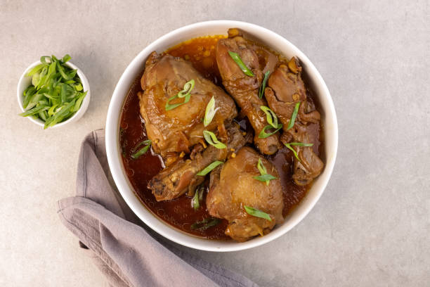

Discover the Flavors of the Philippines

Featured Recipes

View All Recipes
Ulam
The main dish served alongside steamed rice, centerpiece of any meal.

About Filipino Cuisine
Filipino cuisine is a rich tapestry of flavors and traditions, influenced by a variety of cultures. Join us in exploring these delightful dishes!